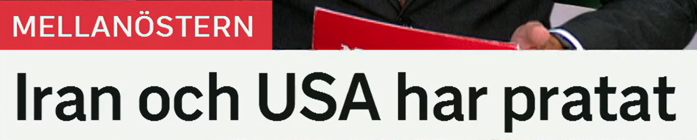
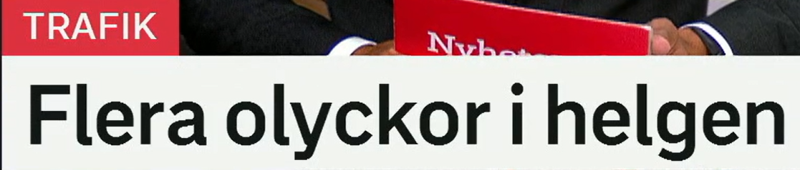
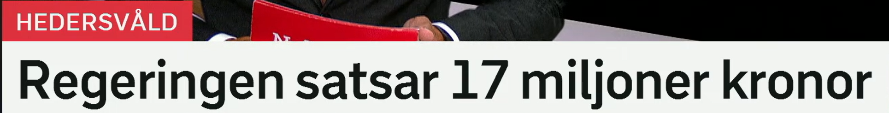
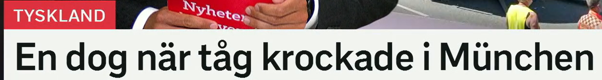
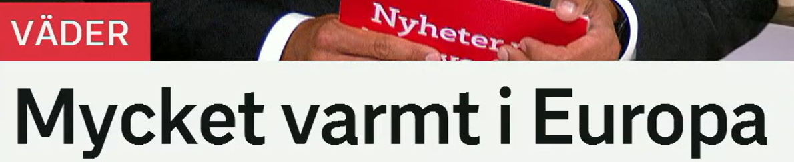

Iran och USA har pratat
伊朗和美国已经进行了谈话。
1. prata = 说话、谈
- prata med någon：和某人谈话，口语感强
- tala med någon：与某人谈话，稍正式
- samtala：进行会谈，新闻语气更稳
- diskutera：讨论某个议题
2. 外交语境的升级词
- förhandla：谈判
- ha samtal：举行会谈
- komma överens：达成一致
- bryta samtalen：中断会谈
Länderna har pratat om säkerhet. 两国已经谈过安全问题。
Parterna ska fortsätta förhandla. 各方将继续谈判。
Diplomaterna hade samtal i natt. 外交官们夜间举行了会谈。

Flera olyckor i helgen
周末发生多起事故。
1. flera = 好几个、多起
- flera personer：多人
- flera gånger：好几次
- flera olyckor：多起事故
- många：很多，数量感比 flera 更强
2. olycka = 事故
- en trafikolycka：交通事故
- en singelolycka：单车事故
- en allvarlig olycka：严重事故
- en dödsolycka：致命事故
Flera personer skadades i olyckan. 多人在事故中受伤。
Polisen utreder en trafikolycka. 警方正在调查一起交通事故。
Det var många olyckor under helgen. 周末期间发生了很多事故。

Regeringen satsar 17 miljoner kronor
政府投入 1700 万克朗。
1. satsa = 投入、押注、重点发展
- satsa pengar på något：把钱投入某事
- satsa på skolan：投资教育、重视学校
- investera：投资，偏经济/商业
- lägga pengar på：把钱花在某处，口语直接
2. 数字表达
- 17 miljoner kronor：1700 万克朗
- en miljon：一百万
- en miljard：十亿
- statliga pengar：国家资金、政府资金
Regeringen satsar mer pengar på vården. 政府向医疗投入更多资金。
Kommunen investerar i nya bostäder. 市政部门投资新住房。
Pengarna ska gå till stöd för utsatta personer. 这笔钱将用于支持弱势人群。

En dog när tåg krockade i München
慕尼黑火车相撞时，一人死亡。
1. dog / dö = 死亡
- dö：死亡，原形
- dog：过去式，死了
- omkomma：遇难，新闻报道更常用
- mista livet：丧生，较正式
2. krocka = 相撞
- två tåg krockade：两列火车相撞
- krocka med：与某物相撞
- kollision：碰撞，名词
- frontalkrock：迎面相撞
En person omkom i olyckan. 一人在事故中遇难。
Tåget krockade med ett annat tåg. 这列火车与另一列火车相撞。
Flera personer skadades i kollisionen. 多人在碰撞中受伤。

Mycket varmt i Europa
欧洲非常炎热。
1. varmt = 热、暖
- varm：热的、暖的，基本形
- varmt：中性形，也可作副词“热地/很热”
- hett：酷热的、炽热的，程度更强
- svalt：凉爽的
2. 天气新闻词族
- värme：热、热天气
- värmebölja：热浪
- temperatur：温度
- rekordvärme：创纪录高温
Det blir mycket varmt i södra Europa. 南欧将会非常热。
En ny värmebölja väntas i veckan. 本周预计会有新一轮热浪。
Temperaturen kan stiga över 35 grader. 气温可能升至 35 度以上。
今日词汇扩展表
下面这些词都可以从标题直接扩展到日常表达和新闻阅读。
| 标题词 | 同义词/近义词 | 高频搭配 |
|---|---|---|
| prata | tala, samtala, diskutera, förhandla | prata med, prata om, ha samtal, fortsätta förhandla |
| olycka | trafikolycka, kollision, dödsolycka, incident | flera olyckor, allvarlig olycka, skadas i olyckan |
| satsa | investera, lägga pengar på, prioritera, stödja | satsa pengar på, satsa miljoner, satsa på vården |
| krocka | kollidera, frontalkrocka, köra in i, vara inblandad i kollision | krocka med, tåg krockade, kollisionen orsakade stopp |
| dö | omkomma, mista livet, avlida | en dog, flera omkom, mista livet i olyckan |
| varmt | hett, varmt väder, värme, värmebölja | mycket varmt, rekordvärme, temperaturen stiger |
练习 1
把“这些国家已经举行会谈”译成瑞典语。提示：Länderna har haft samtal.
练习 2
用 flera 和 olyckor 写“周末发生多起事故”。提示：Flera olyckor i helgen.
练习 3
用 satsa på 写“政府投资医疗”。提示：Regeringen satsar på vården.
练习 4
用 värmebölja 写“欧洲有热浪”。提示：Det är en värmebölja i Europa.